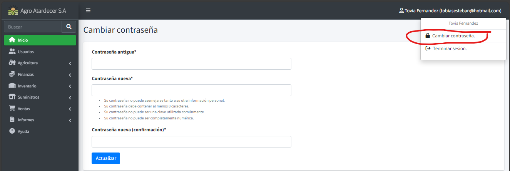

Mantenimiento de Usuarios
Listado Base
Si el usuario cuenta con los permisos adecuados, puede crear nuevos usuarios accediendo a la opción "Usuarios" en la barra del menú principal.
Una vez dentro, se desplegará la siguiente pantalla:
Info
El funcionamiento es similar a los puntos mencionados anteriormente.

Registro de Nuevo Usuario
Seleccione "Añadir" para acceder a la pantalla de registro. Complete todos los campos requeridos y guarde la información para agregar exitosamente un nuevo usuario al sistema.

Actualización de Información de Usuario
En el modo de actualización (al presionar el botón de editar), podrá modificar varias informaciones del usuario, con excepción de la contraseña.

Restablecimiento de Contraseña
Diríjase a la opción en el menú con el nombre del usuario actual y seleccione "Cambiar Contraseña".

Dentro de esta sección, se le pedirá que ingrese tanto la contraseña antigua como la nueva para confirmar el cambio.